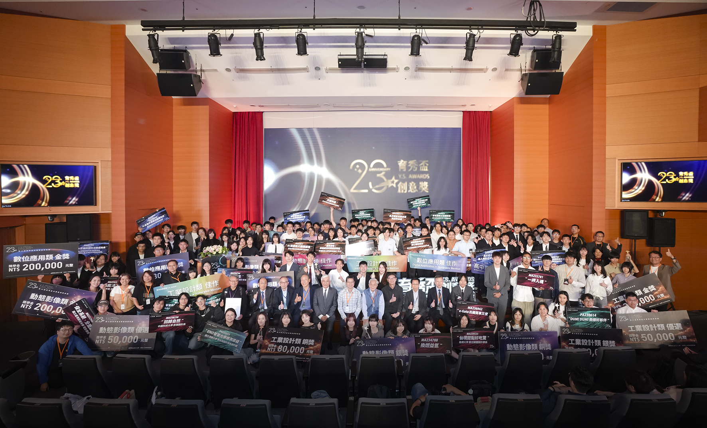
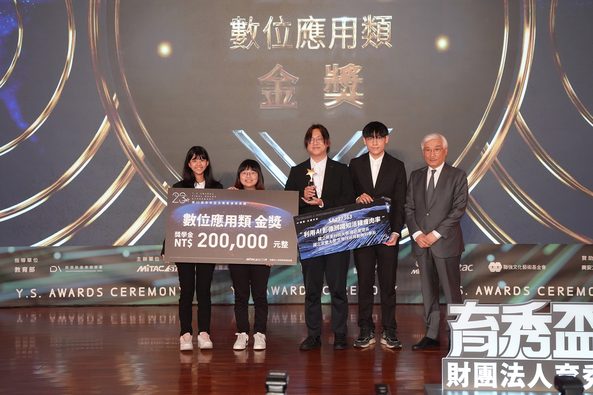
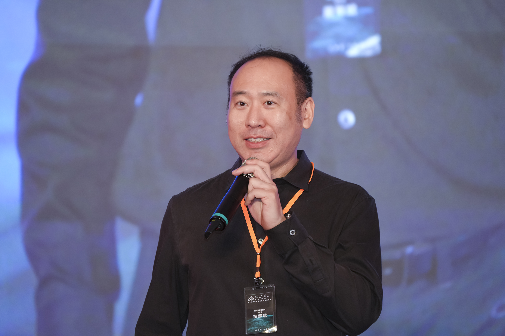
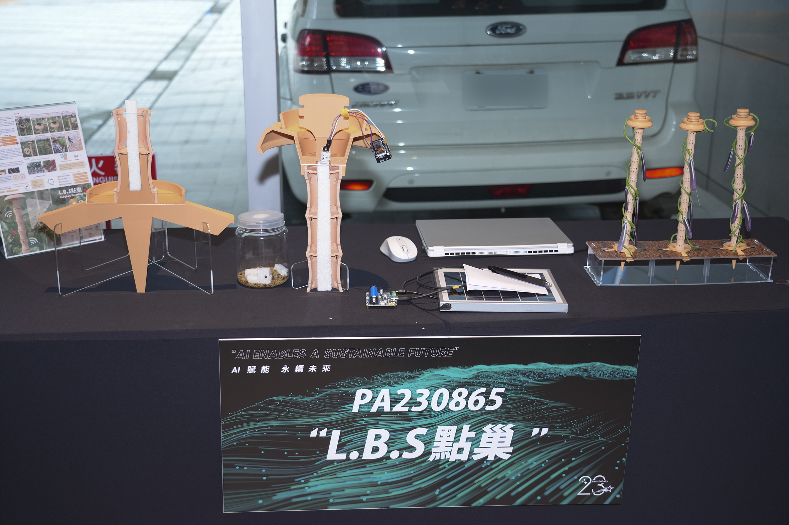
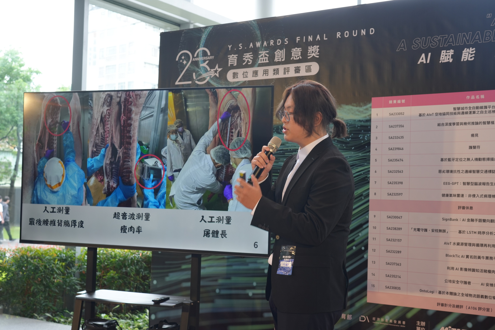
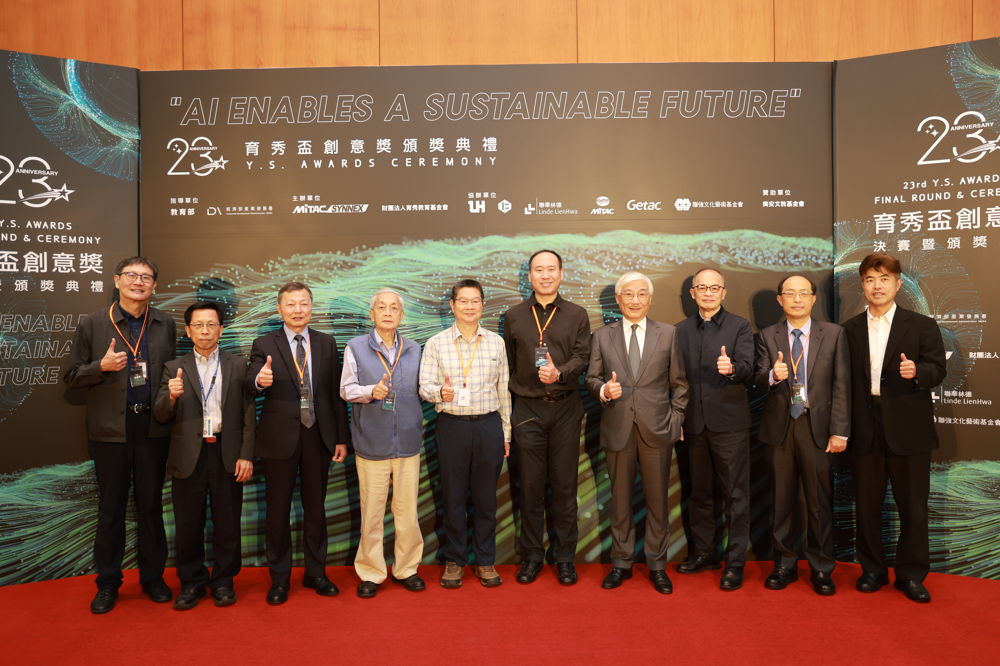
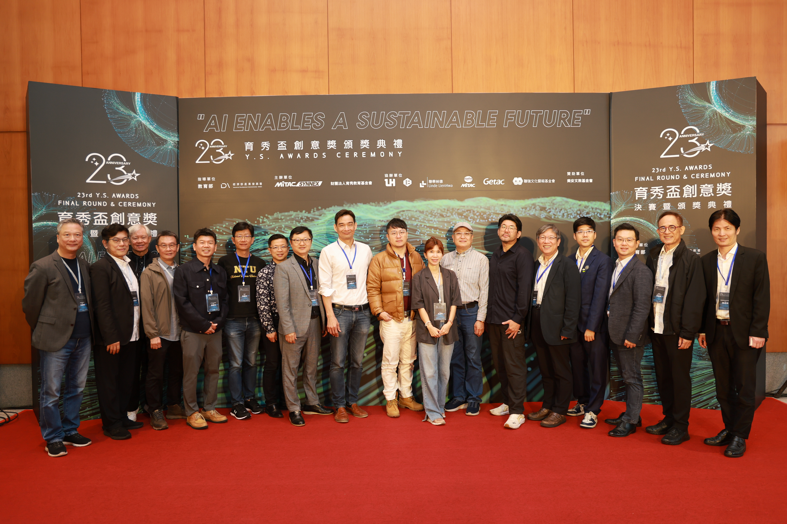
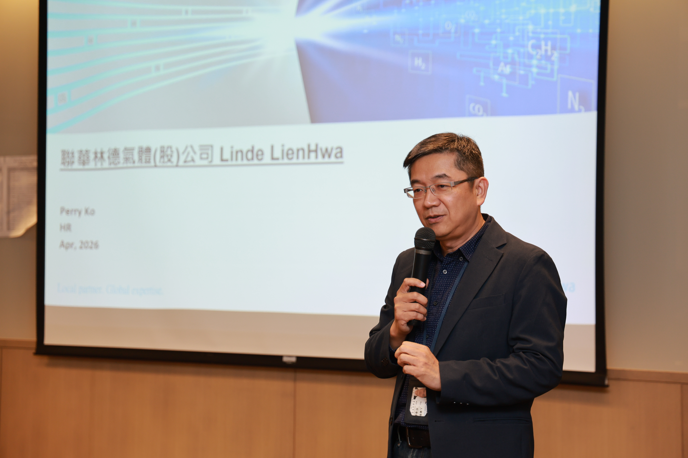
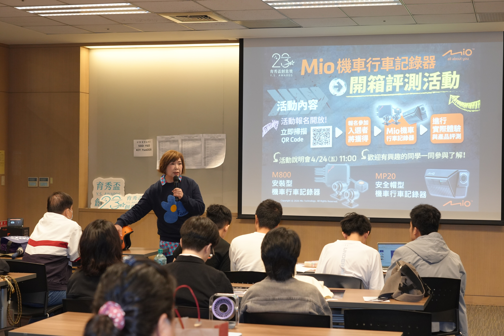

「第23屆育秀盃創意獎」四大金獎揭曉
從創意到實作 培育台灣AI與永續新世代人才
由教育部及經濟部產業發展署指導、聯華神通集團育秀教育基金會主辦的「第23屆育秀盃創意獎」決賽暨頒獎典禮，今（24）日於聯華實業企業總部舉行。第23屆賽事以「AI賦能 永續未來」為主軸，60組入圍團隊齊聚決賽舞台，作品涵蓋教育、能源、醫療、金融、公共安全、永續、數位影像及生活應用等多元領域。歷經現場嚴謹評選後，四大類別金獎正式揭曉，分別為「高中職AI競賽」國立花蓮高級中學作品一「自適應性輔助學習系統」、「數位應用類」國立屏東科技大學資訊管理系與國立宜蘭大學生物技術與動物科學系作品一「利用AI影像辨識知活豬瘦肉率」、「工業設計類」國立臺北教育大學藝術與造型設計學系作品一「L.B.S點巢」，以及「動態影像類」國立臺灣藝術大學電影學系作品一「保全系統•全面啟動」，為本屆賽事寫下亮眼成果，也展現新世代青年創新實作的豐沛能量。

圖說：第23屆育秀盃創意獎決賽暨頒獎典禮精彩落幕，貴賓與獲獎團隊齊聚合影，共同見證青年創新成果綻放。
產官學齊聚見證 育秀盃決賽寫下亮眼成果
本屆頒獎典禮邀請經濟部產業發展署副組長邱明良、李國鼎科技發展基金會祕書長萬其超、聯強國際杜書伍總裁、聯華實業控股林信宏總經理、育秀教育基金會景虎士董事長、聯華神通集團徐造華幕僚長等貴賓出席，共同見證青年世代在AI應用與跨域創新上的亮眼成果。
第23屆育秀盃創意獎共吸引714組團隊投件，最終60組團隊脫穎而出，角逐四大類別金獎20萬元獎學金，總獎金達310萬元，也再次突顯育秀盃作為青年創意與科技實作平台的重要指標地位。

圖說：聯強國際集團總裁杜書伍先生頒發「數位應用類金獎」，肯定青年學子以科技回應真實需求的創新實力
AI與永續交會 決賽作品回應真實需求
本屆決賽作品內容多元，從廢棄光電板再生無人船建造、真聲驗證系統用於語音防詐、充電異常預警、無需電力維持減震的低底盤巴士，到人工智慧於教育、金融、環境工程、自動化及品牌影像設計等應用，皆展現青年團隊將科技與創意融合、回應真實需求的能力，也讓本屆賽事更具議題性與觀察價值。
台灣人工智慧技術協會技術處長胡翔崴表示，「今年不少作品已經展現出從需求定義、技術整合到應用想像的完整思考，這代表青年世代不只是會使用AI，更開始具備把AI轉化為產業與社會解方的能力。」
育秀教育基金會執行長苗華斌也表示，育秀盃不只是競賽，更是青年將創意化為行動的重要舞台。今年首度納入高中職AI應用類團隊，也更完整呈現台灣青年創新人才的跨世代接力與多元能量。

圖說：育秀教育基金會執行長苗華斌於頒獎典禮致詞，向師長與評審委員表達感謝，並勉勵青年學子將AI創意落實為改變未來的行動
從競賽走向交流 拓展青年連結與未來視野
本屆決選邀請產官學界共十八位專家擔任評審，從技術、設計、敘事與市場應用等面向進行綜合評比。活動現場除安排台灣設計研究院分享「AI設計研究工具」，也結合集團品牌交流與人才招募；集團旗下神達數位Mio 亦帶來最新款機車用行車記錄器評測體驗，與學生及年輕族群互動交流。
育秀教育基金會表示，「育秀盃創意獎」長期致力於推廣新興科技，鼓勵青年學子從真實議題出發，培養洞察問題與實踐創意的能力。第23屆育秀盃創意獎圓滿落幕，也再次讓外界看見台灣青年世代在AI與永續趨勢下持續成長的創新潛力。
更多得獎資訊，請上「育秀盃」官網(https://award.ysed.org.tw) 及「育秀教育基金會FB」(https://reurl.cc/bd2Ojv) 掌握最新快訊。

圖說：工業設計類金獎作品「L.B.S點巢」、數位應用類金獎作品「利用AI影像辨識知活豬瘦肉率」，展現青年團隊結合科技應用、設計思維與實作能力，回應生活場景與產業需求的創新成果


圖說：23屆育秀盃創意獎蒞臨長官及貴賓

圖說：第23屆育秀盃創意獎四大類共計18位業界專家評審委員

圖說：聯華林德氣體人才招募，展現企業積極延攬優秀人才

圖說：神達數位Mio機車行車紀錄器開箱評測活動